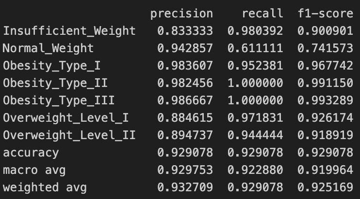
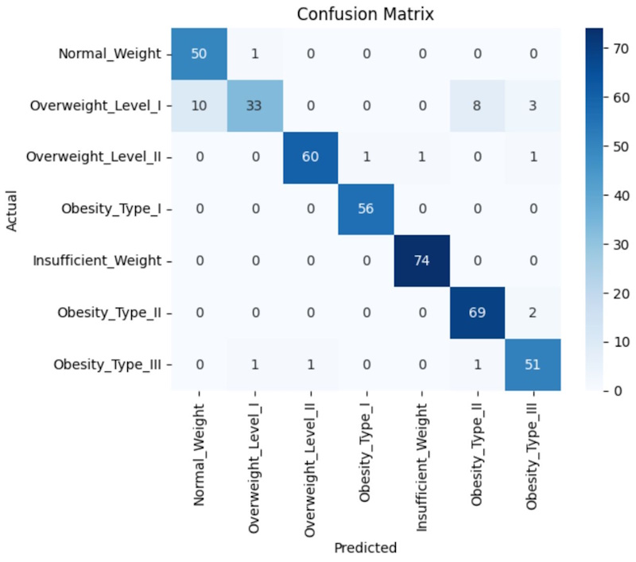
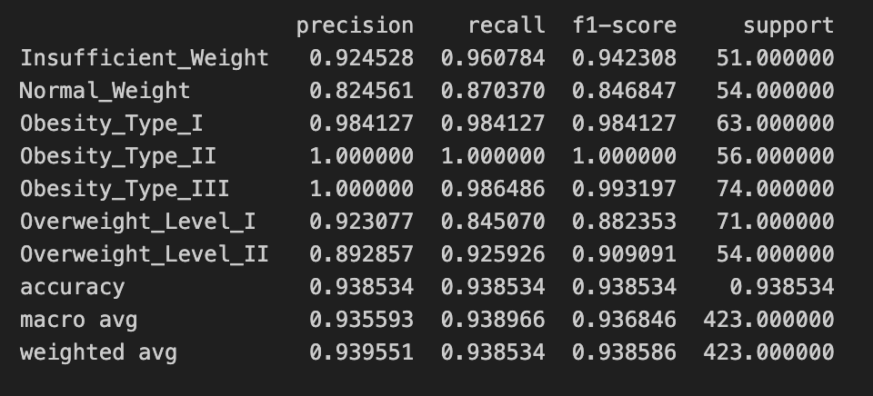
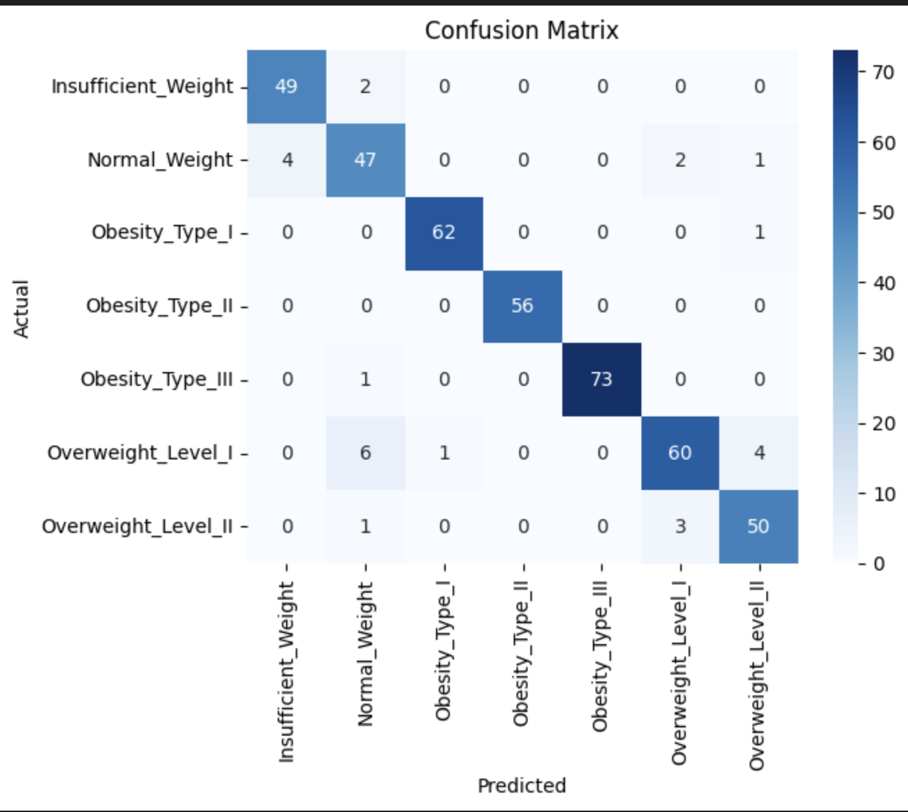

Somos un equipo pequeño de estudiantes que, mediante el análisis de los índices de obesidad en ciertos países, buscamos verificar la existencia de una relación directa entre variables específicas. Estas incluyen la edad, el género, los antecedentes familiares de sobrepeso, el consumo habitual de alimentos ricos en calorías, la ingesta de alimentos entre comidas, el consumo diario de agua, la frecuencia de actividad física y el tiempo dedicado al uso de dispositivos tecnológicos. Nuestra investigación tiene como objetivo evaluar de manera integral los factores que inciden en los niveles de obesidad, contribuyendo así al entendimiento más profundo de esta problemática de salud pública.

La elección de este conjunto de datos se fundamenta en su relevancia para la salud pública y su potencial para proporcionar información clave sobre los niveles de obesidad en México, Perú y Colombia. La obesidad es un problema de salud global, y comprender su prevalencia, junto con los factores que la influyen, es crucial para desarrollar intervenciones y políticas efectivas. Este conjunto de datos ofrece diversidad geográfica al abarcar tres países, lo que permite explorar y comparar los niveles de obesidad en diferentes regiones. La inclusión de individuos de 14 a 61 años posibilita examinar tendencias en diferentes grupos de edad, mientras que la variedad de atributos relacionados con los hábitos alimenticios y la condición física permite un análisis multifacético. Además, la metodología de encuesta anónima a través de una plataforma web proporciona un tamaño de muestra grande y respuestas potencialmente sinceras. Con variables clave como género, edad, altura y peso, junto con la clasificación de niveles de obesidad, el conjunto de datos ofrece un enfoque integral para entender y abordar el problema de la obesidad en estos países, con la posibilidad de aplicar diversos algoritmos de aprendizaje automático para extraer patrones significativos.
Existe una relación entre la edad, el género, los antecedentes familiares por sobrepeso, el consumo frecuente de comida alta en calorías, el consumo de alimentos entre comidas, el consumo diario de agua, la frecuencia de actividad física y el tiempo de uso de dispositivos tecnológicos que influyen directamente al nivel de obesida
La edad y el género proporcionan información fundamental sobre el metabolismo y los hábitos relacionados con la alimentación y la actividad física, lo que puede influir significativamente en el peso corporal. Por otro lado, los antecedentes familiares de sobrepeso sugieren una predisposición genética que puede aumentar el riesgo de obesidad en un individuo. Además, el consumo frecuente de comida alta en calorías y el hábito de comer entre comidas están asociados con una dieta poco saludable, a su vez el tiempo dedicado al uso de dispositivos tecnológicos puede indicar comportamientos sedentarios que contribuyen al aumento de peso. mientras que el consumo diario de agua y la frecuencia de actividad física están vinculados a un estilo de vida más equilibrado y activo.
Nuestro objetivo es desarrollar un modelo de clasificación eficiente que pueda predecir con precisión la categoría de peso de un individuo, como peso insuficiente, peso normal y varios niveles de sobrepeso y obesidad. El modelo debe minimizar los errores de clasificación y maximizar la precisión de la predicción para cada categoría.
El modelo k-NN fue seleccionado por su eficacia en la clasificación de datos multidimensionales y su flexibilidad para ajustarse a distintas configuraciones de clasificación. Esta técnica, que clasifica los datos basándose en la similitud de las características con sus 'k' vecinos más cercanos, resultó ser particularmente adecuada para nuestro conjunto de datos debido a su capacidad para manejar las complejidades inherentes a las múltiples variables de estilo de vida que afectan al peso corporal.
Evaluamos el desempeño del modelo k-NN a través de métricas estándar de clasificación: precisión, recall y la puntuación F1. La precisión nos indica la proporción de identificaciones correctas para cada categoría de peso, el recall refleja la capacidad del modelo para detectar todas las instancias relevantes dentro de una categoría y la puntuación F1 ofrece un balance entre la precisión y el recall, útil para comparar el rendimiento general entre clases desbalanceadas.
Las métricas por clase muestran cómo el k-NN logra distinguir eficazmente entre categorías. Por ejemplo, para las clases 'Obesity_Type_II' y 'Obesity_Type_III', el modelo exhibió altos valores de precisión y recall, lo que demuestra su capacidad para identificar y clasificar correctamente estos casos críticos. Los promedios ponderados y macro reflejan un rendimiento robusto del modelo en todo el espectro de categorías de peso, lo que valida nuestra elección inicial de k-NN para este problema de clasificación multiclase.
La selección de k-NN se basó en estos indicadores de rendimiento y en su simplicidad conceptual, que facilita la interpretación de los resultados y la comunicación de los hallazgos a un público no especializado. Además, la elección de 'k', el número de vecinos, se ajustó cuidadosamente para maximizar estas métricas, asegurando un equilibrio entre la sensibilidad y la especificidad del modelo.
Utilizamos una metodología de validación cruzada para evaluar nuestro modelo, asegurando que cada instancia de los datos sea usada tanto para entrenamiento como para prueba. Las métricas empleadas incluyen precisión, que mide la proporción de identificaciones correctas; recall, que mide la proporción de positivos reales identificados correctamente; y la puntuación F1, que es la media armónica de precisión y recall.
La matriz de confusión proporciona una visualización de la clasificación por parte del modelo en cada categoría.
El uso de un modelo de random forest para predecir múltiples clases de peso en nuestro dataset es una elección acertada debido a su capacidad para manejar tanto datos categóricos como numéricos. Dado que nuestro dataset incluye características como género, edad, altura y peso, así como hábitos alimenticios y de consumo, random forest puede manejar esta diversidad de variables de manera efectiva. Su capacidad para realizar una selección de características implícita asegura que las variables más relevantes se utilicen adecuadamente, mejorando así la precisión de las predicciones.
Random forest es especialmente adecuado para problemas de clasificación multiclase, como en nuestro caso, donde necesitamos predecir siete categorías de peso diferentes. La naturaleza de ensemble del modelo, que combina las predicciones de múltiples árboles de decisión, permite una predicción más precisa y generalizable. Además, su robustez frente a datos ruidosos y valores atípicos es crucial en datasets de salud y nutrición, donde la variabilidad individual puede ser significativa.
Otra ventaja importante de random forest es su interpretabilidad. El modelo puede proporcionar información sobre la importancia de las características, permitiéndonos identificar qué variables influyen más en las distintas categorías de peso. Esto no solo mejora la comprensión del modelo, sino que también puede informar estrategias de intervención personalizadas. En resumen, random forest ofrece una combinación de precisión, robustez y capacidad de interpretación que lo hace ideal para predecir las múltiples clases de peso en este dataset.
Así mismo como en el modelo anterior, hemos decidido hacer uso de la validación cruzada para evaluar la factibilidad de este modelo. Hemos utilizado las mismas métricas que en el caso mencionado anteriormente, las cuales son: precisión, que nos da a grandes rasgos una idea de la efectividad del modelo; pero, dado que estamos en el ámbito de la salud de las personas, también usamos el recall para determinar qué tan efectivo es en términos de evitar los falsos negativos. Por último, empleamos el F1 score para determinar una proporción idónea entre estas dos métricas.
La matriz de confusión es una herramienta poderosa que nos ayuda a evidenciar cómo se relacionan los valores predichos con los valores reales.
Ambos modelos demostraron ser eficaces en la clasificación de los niveles de obesidad, con fortalezas en diferentes áreas. Mientras que el modelo k-NN es simple y fácil de interpretar, el modelo Random Forest ofrece una precisión y consistencia ligeramente superiores. Nuestra elección final depende de la prioridad del análisis: para aplicaciones donde la precisión y la consistencia son críticas, Random Forest es la mejor opción. Sin embargo, para interpretaciones más sencillas y rápidas, k-NN sigue siendo una opción viable. La combinación de ambos modelos podría aprovechar las fortalezas de cada uno para obtener un enfoque más robusto y preciso en futuros estudios.